| Escudo | Clube | Autor | Arquivo de origem | Licença |
|---|---|---|---|---|
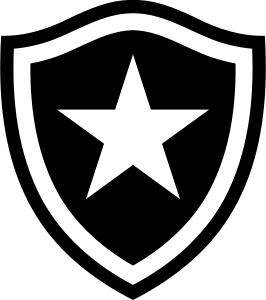 | Botafogo FR | Botafogo de Futebol e Regatas | Botafogo de Futebol e Regatas logo.svg | Domínio público |
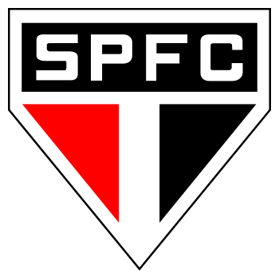 | São Paulo FC | São Paulo Futebol Clube | Brasao do Sao Paulo Futebol Clube.svg | Domínio público |
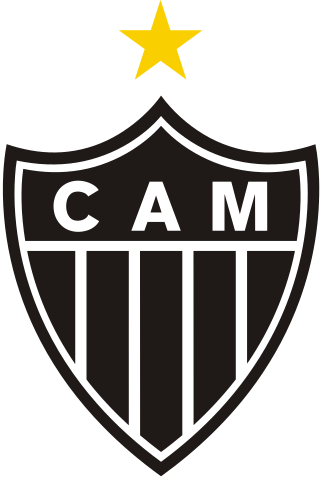 | CA Mineiro | Clube Atlético Mineiro | Clube Atlético Mineiro logo.svg | Domínio público |
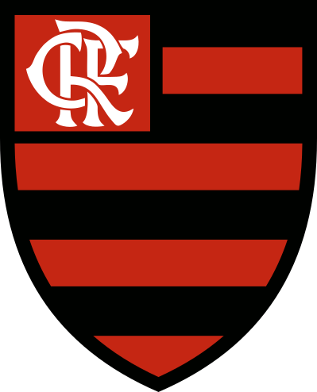 | CR Flamengo | Clube de Regatas do Flamengo | Clube de Regatas do Flamengo logo.svg | Domínio público |
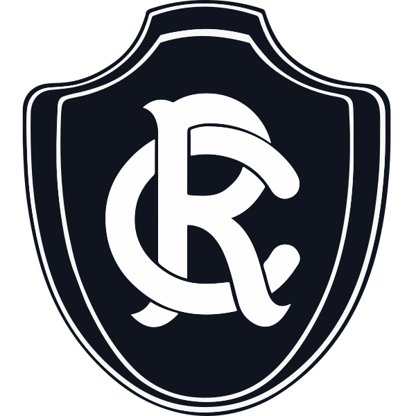 | Clube do Remo | Clube do Remo | Clube do Remo.svg | Domínio público |
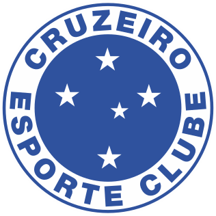 | Cruzeiro EC | Cruzeiro Esporte Clube | Cruzeiro Esporte Clube (logo).svg | Domínio público |
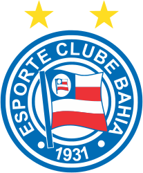 | EC Bahia | Esporte Clube Bahia | Esporte Clube Bahia logo.svg | Domínio público |
| Grêmio FBPA | Grêmio Foot-Ball Porto Alegrense | Gremio logo.svg | Domínio público | |
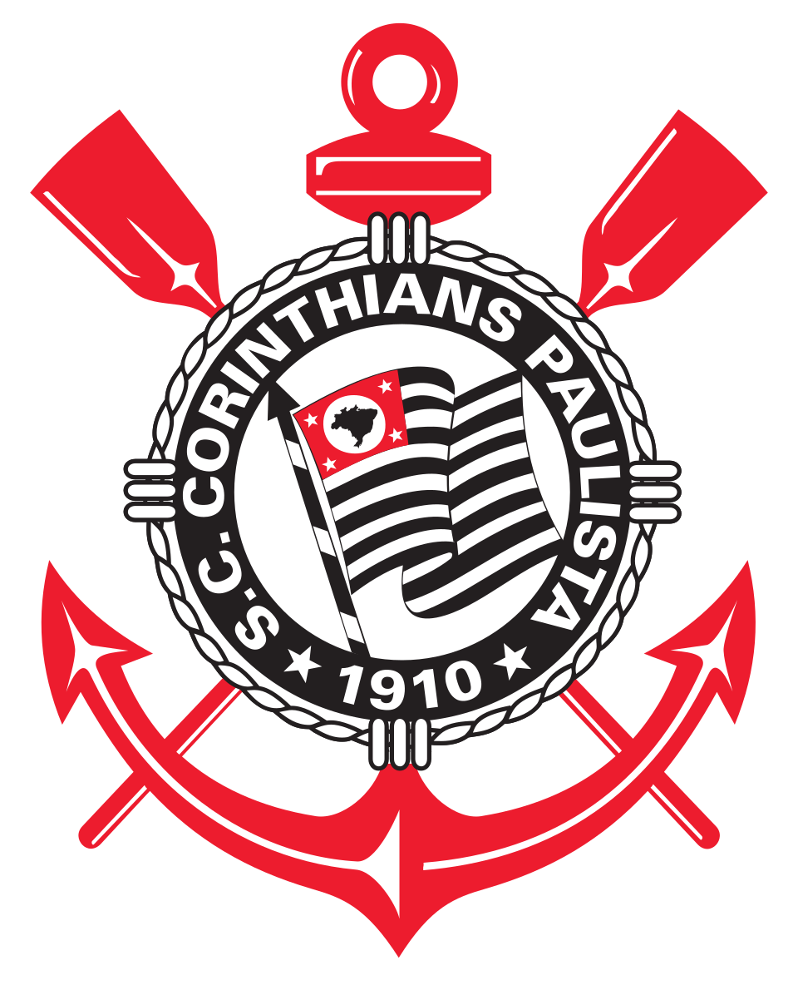 | SC Corinthians Paulista | Fratino.koko | Official Logo of Sport Club Corinthians Paulista crest 2026.png | CC BY-SA 4.0 |
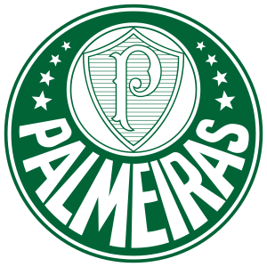 | SE Palmeiras | Sociedade Esportiva Palmeiras | Palmeiras logo.svg | Domínio público |
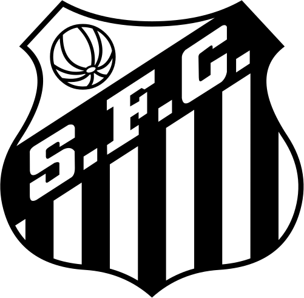 | Santos FC | Santos Futebol Clube | Santos logo.svg | Domínio público |
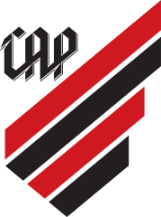 | CA Paranaense | Clube Athletico Paranaense | Athletico Paranaense (Logo 2019).svg | Domínio público |
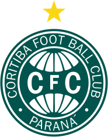 | Coritiba FBC | Coritiba Foot Ball Club | Coritiba Foot Ball Club logo.svg | Domínio público |
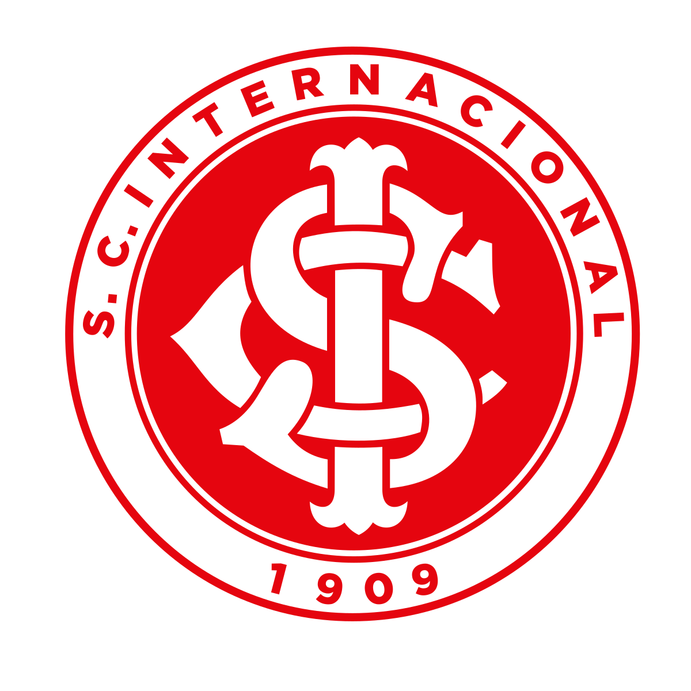 | SC Internacional | Sport Club Internacional | Escudo do Sport Club Internacional.svg | Domínio público |
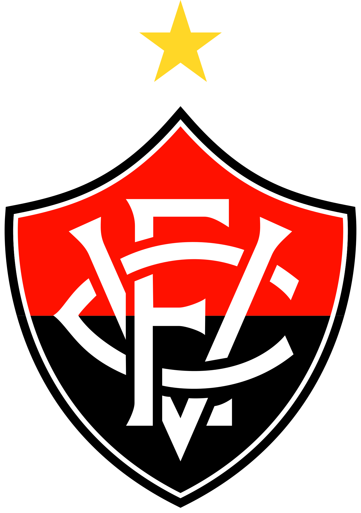 | EC Vitória | Esporte Clube Vitória | Esporte Clube Vitória (2024).svg | Domínio público |
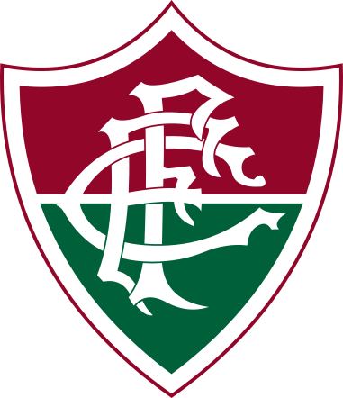 | Fluminense FC | Fluminense FC | Fluminense Football Club.svg | Domínio público |
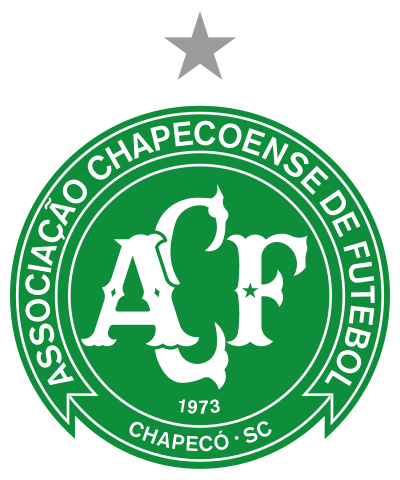 | Chapecoense AF | Chapecoense | Logo Associação Chapecoense de Futebol.svg | Domínio público |
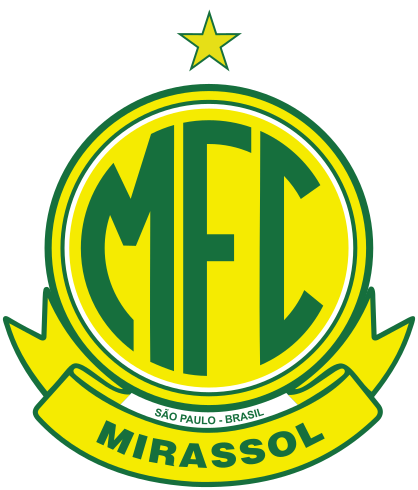 | Mirassol FC | Mirassol Futebol Clube | Mirassol Futebol Clube logo.svg | Domínio público |
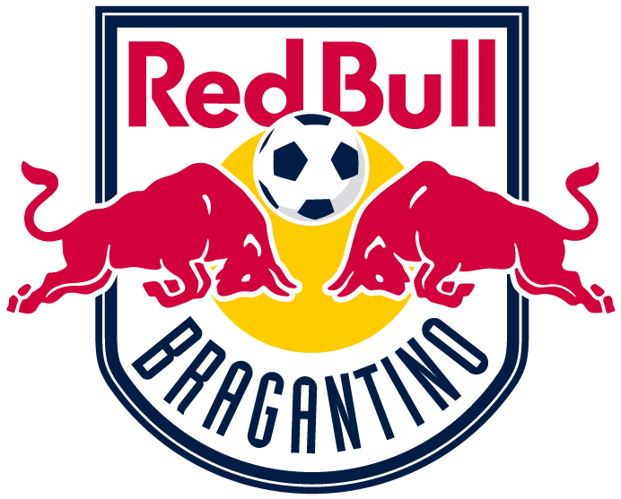 | RB Bragantino | Red Bull Bragantino | Red Bull Bragantino Logo | © Red Bull Bragantino — todos os direitos reservados; usado apenas para identificar o clube |
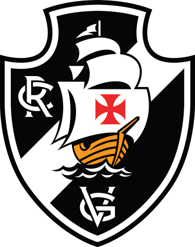 | CR Vasco da Gama | Club de Regatas Vasco da Gama | EscudoDoVascoDaGama.svg | © Club de Regatas Vasco da Gama — todos os direitos reservados; usado apenas para identificar o clube |


.svg){kind=link}
.svg#Licensing){kind=link}


.svg){kind=link}
.svg#Licensing){kind=link}


.svg){kind=link}
.svg#Licensing){kind=link}